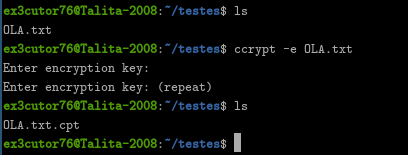
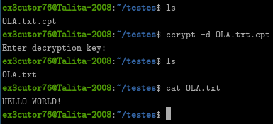

Ccrypt:
Ccrypt também é uma ferramenta de criptografia, só que bem simples, não é tão segura assim quanto o gpg, mas
ela de fato criptografa arquivos, por mais que é uma criptografia bem simples, entretanto, o lado bom é que é
bem mais leve e simples do que o gpg, funcionando até em hardware antigo, inclusive a criptografia do ccrypt é
simétrica, então tipo... A senha de criptografar é a mesma senha para criptografar.
Instalação e como utilizar:
Bem antes de mostrar os testes, só pra avisar que vai ser usado o mesmo arquivo que criamos no teste anterior.

Como podem ver, foi bem simples, assim como no gpg e bem... O comando usado foi esse: ccrypt -e OLA.txt que bem
na mesma lógica que o gpg, o ccrypt também usa uma flag única para se referir a criptografar e descriptografar, sendo o
"-e" que significa "encrypt", mas agora... Vamos descriptografar?

Percebe-se que sim para descriptografar foi a mesma coisa que o gpg, no caso: ccrypt -d OLA.txt, só que ao em vez dele nos mostrar a
mensagem diretamente, ele já nos entrega o arquivo para lermos.
Instalação:
Linux: sudo apt install ccrypt
Windows: No caso o ccrypt não tem versão pra Windows... É mais recomendado usar em WSL (Windows Subsystem Linux)
Termux: pkg install ccrypt